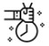

Exemple pràctic. Com portar a terme una campanya de Whatsapp Business.
Una xarcuteria-carnisseria d'Amposta vol oferir un servei molt més personalitzat a la seva clientela que permeti resoldre dubtes, facilitar la compra, generar valor al voltant dels seus elaborats càrnics i mantenir la clientela contínuament informada de qualsevol aspecte important.
Quins elements cal preparar?
1
Creació de perfil del negoci a Whatsapp: inclou d'atenció, lloc web, xarxes socials i possibilitat d'entrega a domicili o no.
2
Organització de l'agenda: cal etiquetar els contactes de WhatsApp amb paraules clau que permetin enviar missatges personalitzats a cada tipus de persona consumidora. Prèviament, necessitaràs conèixer quin és el comportament de la teva clientela i indicar que desin el teu número de telèfon al seu terminal per acompliment de RGPD.
3
Automatització de missatges: programa el contingut del missatge a enviar fora de l'horari comercial, o en aquell horari que indiquis. Així, quan no tinguis disponibilitat per respondre, WhatsApp ho farà automàticament.
Quins beneficis et pot suposar?
Personalitza el servei: amb aquesta nova iniciativa, la xarcuteria-carnisseria millorarà el servei cap a la seva clientela.
Incrementa les vendes: l'ús de WhatsApp pot ajudar a donar conèixer i posar en valor els teus productes de valor afegit, els elaborats casolans que singularitzen el teu negoci.

Fidelitza la clientela: amb la introducció d'aquest servei, la xarcuteria-carnisseria estarà més present al dia a dia de la clientela, sense necessitat que aquesta s'hi personi sempre físicament al local.